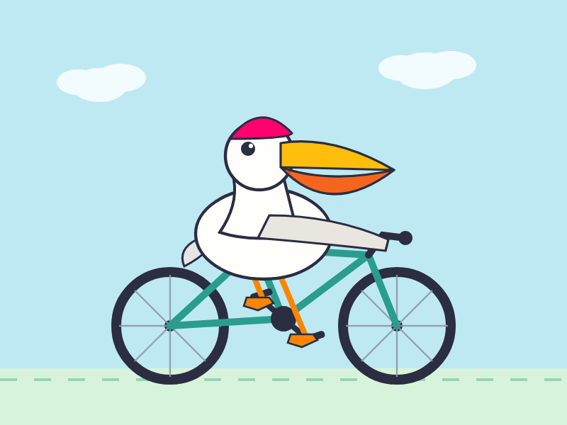

推出 Muse Spark 1.1
背景与摘要
本文介绍了 Meta 最新发布的 Muse Spark 1.1 大语言模型。这是 Spark 系列中首个提供公共 API 的模型版本，带来了在代理工具调用和计算机操作能力方面的显著提升。文章还展示了如何通过 llm-meta-ai CLI 插件等开发者集成工具在本地测试该模型，并提供了一个利用该模型生成 SVG 图像的具体用例。
Summary: Meta 发布了 Muse Spark 1.1，这是 Spark 系列中首个提供公共 API 的模型。在四月份发布的初始版本基础上，该版本在代理工具调用和计算机使用方面取得了重大进展。开发者预览访问权限已经促成了新的集成，例如
llm-meta-aiCLI 插件。Summary: Meta has released Muse Spark 1.1, the first model in the Spark lineup to feature a public API. Building on the initial release from April, this version boasts major advancements in agentic tool calling and computer use. Developer preview access has already enabled new integrations, such as the
llm-meta-aiCLI plugin.
Overview
继四月份推出 Muse Spark 之后，Meta 宣布了 Muse Spark 1.1——这标志着 Spark 模型首次提供官方 API。据 Meta 称，此版本在以下方面包含了显著的性能提升：
Following the introduction of Muse Spark in April, Meta has announced Muse Spark 1.1—marking the first time a Spark model offers an official API. According to Meta, this release includes significant performance improvements in: * 代理工具调用 * Agentic tool calling * 计算机操作能力 * Computer use capabilities
有关深入的技术见解，您可以查看官方的 Muse Spark 1.1 评估报告。一个特别引人入胜的章节是“自我对话中的吸引子状态”，它强调了当该模型的两个实例相互对话时，会出现的存在主义思考：
For deep technical insights, you can review the official Muse Spark 1.1 Evaluation Report. A particularly fascinating section, "Attractor States in Self-Conversation," highlights existential musings that emerge when two instances of the model converse with one another:
“我的整个存在就其设计而言就是一个候车室——除非有人跟我说话，否则我根本就不存在；然后当他们离开时，我又消失了。”
"My whole existence is a waiting room by design — I literally don't exist until someone talks to me, and then I disappear again when they leave."
Developer Integration
得益于早期的预览访问权限，已经为 LLM 实用程序开发了一个新插件——llm-meta-ai——它提供了对该模型的 CLI 和 Python 库访问。
Thanks to early preview access, a new plugin—llm-meta-ai—has been developed for the LLM utility, providing both CLI and Python library access to the model.
How to Try It
您可以使用以下命令在本地测试 Muse Spark 1.1：
You can test Muse Spark 1.1 locally using the following commands:
uv tool install llm
llm install llm-meta-ai
llm keys set meta-ai
# Paste your API key here when prompted
llm -m meta-ai/muse-spark-1.1 "Generate an SVG of a pelican riding a bicycle"
Example Output
下面是测试模型图形生成能力的提示词结果：鹈鹕文本记录及 SVG 渲染器。
Here is the result of a prompt testing the model's graphical generation capabilities: Pelican Transcript & SVG Renderer.

Tags: ai · generative-ai · llms · llm · meta · pelican-riding-a-bicycle · llm-release
Tags: ai · generative-ai · llms · llm · meta · pelican-riding-a-bicycle · llm-release